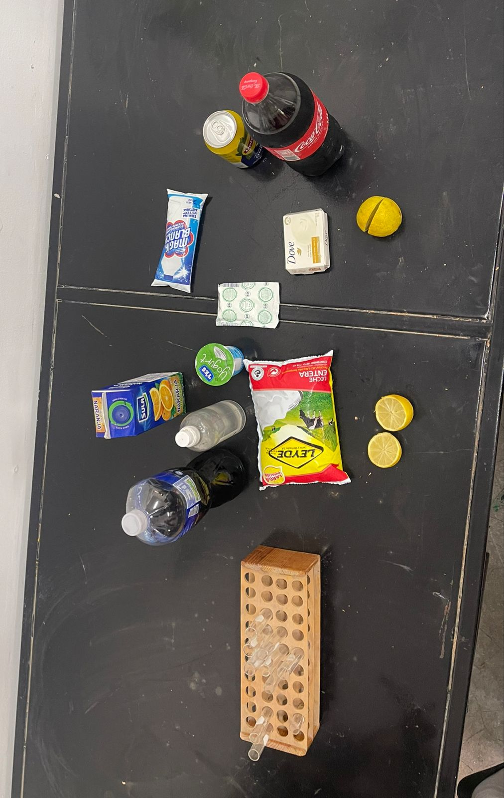
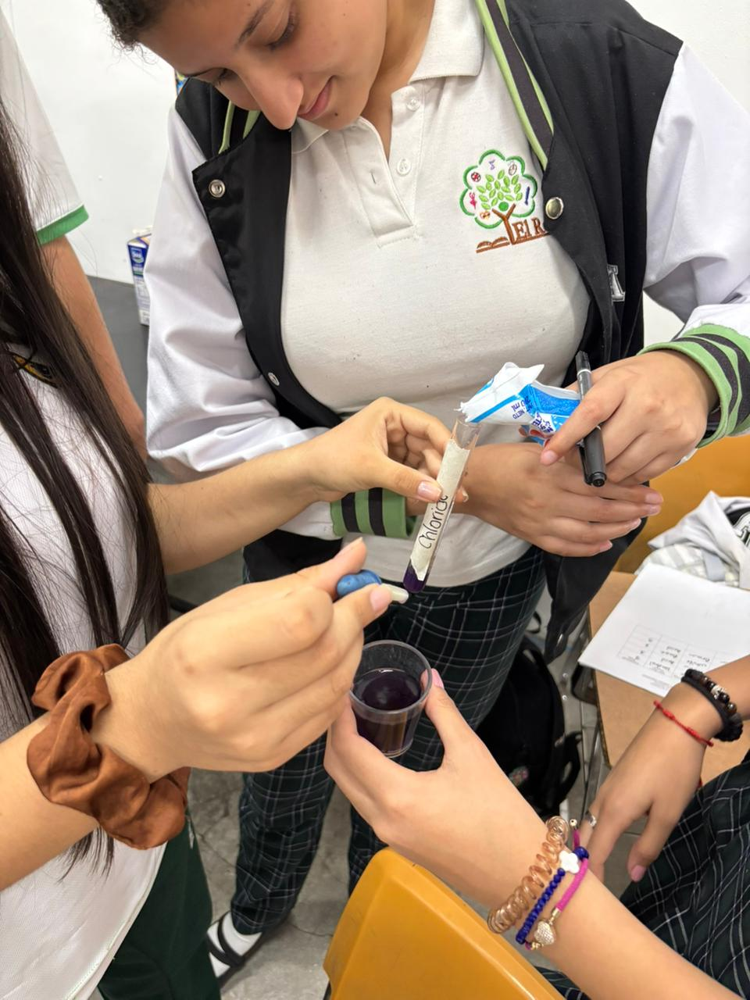

El Roble Academy
Chemistry Lab
By Abigahil Lozano
Materials
-Cups
-cabagge juice
-lipton
-yogurt
-baking soda
-cloride
-coke
-orange juice
-lemon juice
-alcohol

Procedure
The procedure start with the cabagge juice, when we mix an element with the purple cabagge juice will are going to find
the pH of every product, the procudure is simple, the only thing we have to do is to introduce a little bit of purple cabbage
juice in a transparent cup and mix it with other element like for example yogurt, choride, baking soda and it should change
to other color and there we can find the pH scale.
